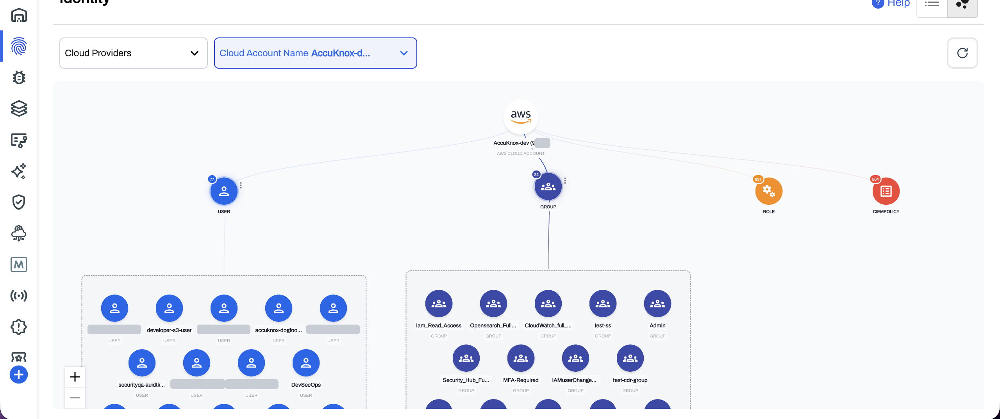
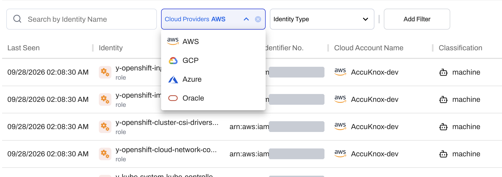
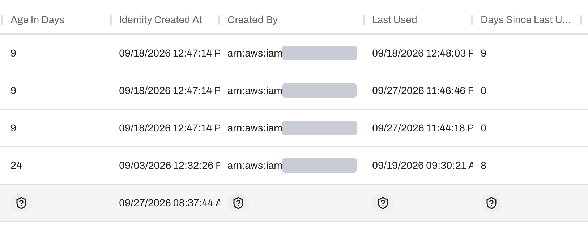
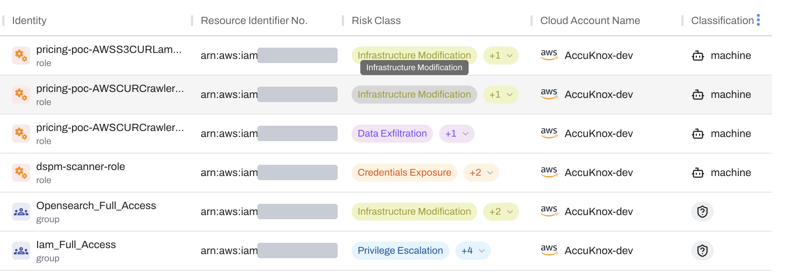
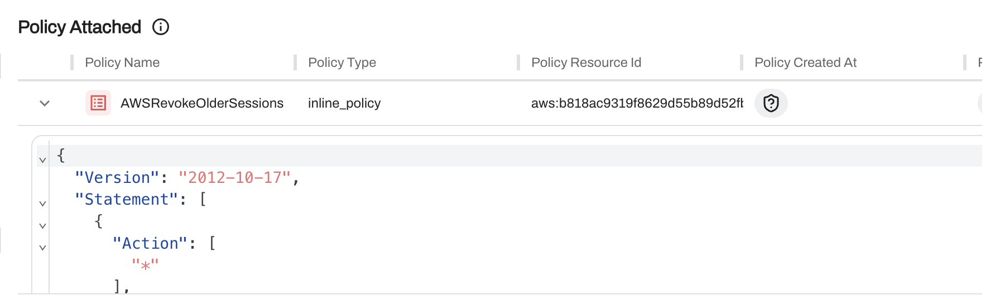
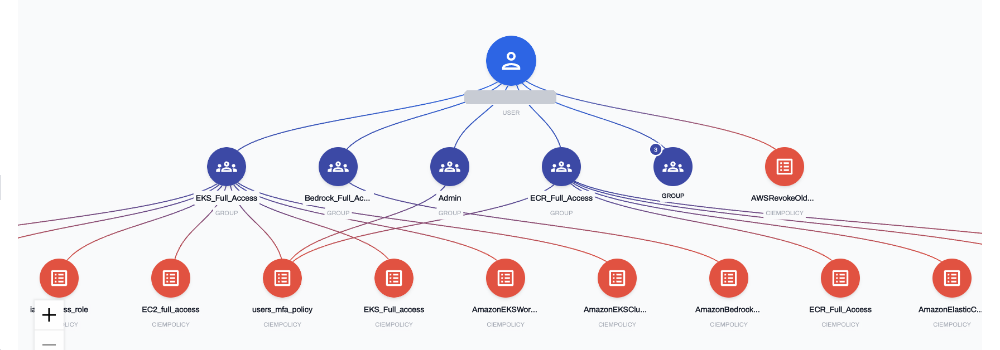
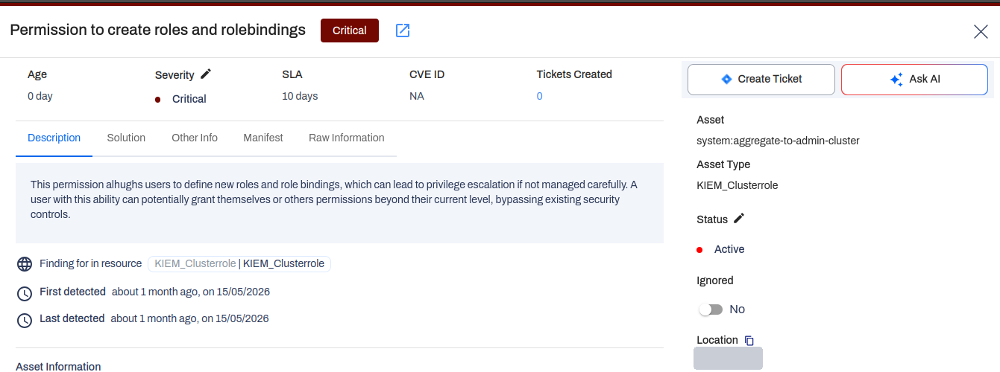

CIEM best practices cheat sheet
Cut the access
your identities
never use
The do's and don'ts for six cloud and Kubernetes identity practices, with the AccuKnox screen that checks each one.
The do's and don'ts for six cloud and Kubernetes identity practices, with the AccuKnox screen that checks each one.
Every cloud account collects users, roles and keys faster than a team reviews them. The unused access stays live, and an attacker who takes one identity gets all of it.
of 51,000 granted permissions were used. Microsoft rated 50% of those permissions high risk.
of the cloud compromises Google Cloud studied rested on an identity compromise.
of AWS IAM users hold an active access key older than one year. Over half of those users left the key unused for 90 days.
Sources: Microsoft, 2024 State of Multicloud Security Risk Report, microsoft.com. Microsoft Entra blog, 2023 State of Cloud Permissions Risks report, techcommunity.microsoft.com.
Start with the inventory, then remove what nobody uses, then read what is left. Kubernetes RBAC gets the same treatment as cloud IAM.

CIEM organization graph of a demo AWS account. help.accuknox.com/getting-started/ciem-overview
AccuKnox CIEM is in beta and supports standalone AWS, GCP, Azure and OCI accounts. Organization accounts are not supported yet. KIEM is generally available.
One list of every user, group and role across AWS, GCP, Azure and OCI, each tagged human or machine.

CIEM identity list with the cloud provider filter. help.accuknox.com/getting-started/ciem-onboarding
CIEM reads each account's users, groups and roles under Identities > CIEM, and the Cloud Accounts list shows CIEM Active per account. Onboard a cloud account for CIEM
An idle identity keeps every permission it holds. Check Days Since Last Used and start with the highest value.

CIEM lifecycle columns. help.accuknox.com/getting-started/ciem-overview
CIEM shows Age In Days, Created By, Last Used and Days Since Last Used for each identity, and the Raw Information tab holds the same fields as JSON. Read the CIEM overview
Datadog found 2.4% of EC2 instances can reach full admin through privilege escalation. Rank identities by what their policies allow.

Risk class chips in the CIEM identity list. help.accuknox.com/getting-started/ciem-overview
CIEM calculates risk classes from each identity's attached policies, such as Privilege Escalation, Data Exfiltration, Credentials Exposure and Infrastructure Modification. See how risk classes work
Source: Datadog, State of Cloud Security, October 2025, datadoghq.com.
A wildcard action hides behind a harmless name. Expand the policy and read every statement.

Policy Attached, with an inline policy expanded to JSON. help.accuknox.com/getting-started/ciem-overview
The Overview tab lists each attached policy with its type, cloud managed, inline or user managed, and expands it to the full JSON document. Open an identity overview
The access graph draws the chain from an identity through its groups to each policy it inherits.

CIEM access graph of one demo AWS user. help.accuknox.com/getting-started/ciem-overview
The Access Graph reads top to bottom: the identity, its groups, and the policies each group grants. A policy attached straight to the identity sits beside the groups. Read the access graph guide
Datadog found 13% of EKS clusters run a node role with admin access, privilege escalation or broad data access.

KIEM finding for a ClusterRole that can create roles and role bindings. help.accuknox.com/getting-started/3.5-release
KIEM ships 15 built in queries for RBAC risk, such as excessive privileges and unused roles, and draws each entity's connections as a graph. Set up KIEM
Source: Datadog, State of Cloud Security, October 2025, datadoghq.com.
Read each row. Where the gap is true for you, take the first step this week.
| If this is true | AccuKnox capability | First step |
|---|---|---|
| Nobody can list every user, group and role in each cloud | CIEM identity list | Onboard each account with the CIEM toggle on |
| Roles and keys from finished projects still exist | CIEM lifecycle columns | Review the identities with the highest Days Since Last Used |
| You cannot say which identities can escalate privileges | CIEM risk classes | Filter to Privilege Escalation and assign owners |
| Policies get approved by name | CIEM policy view | Expand inline policies and search for wildcards |
| Group membership grants access nobody reviewed | CIEM access graph | Open the graph for every Admin group member |
| Kubernetes service accounts never get reviewed | KIEM | Install the KIEM job and run the unused role query |
Book a demo and walk through CIEM and KIEM on your own gap check, from the identity list to the access graph.
Book a demo Open the CIEM docsKuppingerCole CNAPP Leadership Compass features AccuKnox Zero Trust CNAPP.
Best Practices recognitions in 2026, one global and one regional.
clouds in one CIEM identity list: AWS, GCP, Azure and OCI.
built in KIEM queries for Kubernetes RBAC risk.
Sources: accuknox.com/analyst-recognition, help.accuknox.com/getting-started/ciem-overview, help.accuknox.com/use-cases/kiem. CIEM is in beta.